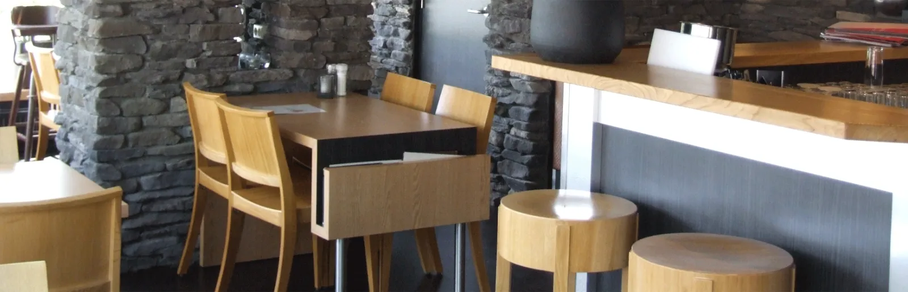

Restaurant
35 zitplaatsen voor een kopje koffie, een uitsmijter, een bord frites of een warme maaltijd. We werken niet met vaste lunch- en dinertijden: in overleg bestelt u ’s avonds van de lunchkaart of overdag van de dinerkaart. Naast lunch en diner is er een glutenvrije kaart en een dagmenu, elke dag een maaltijd voor € 13,50.